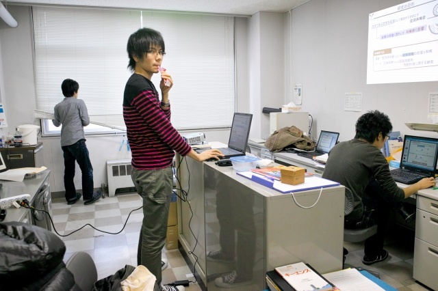
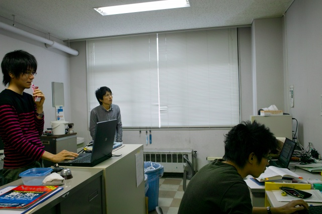
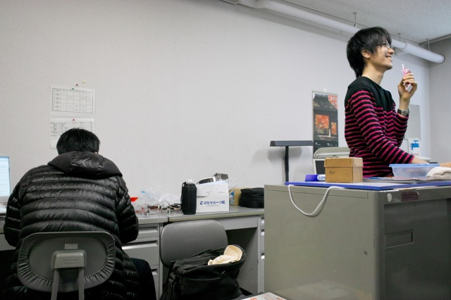
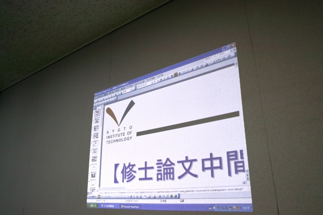
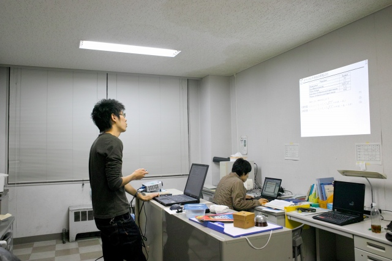
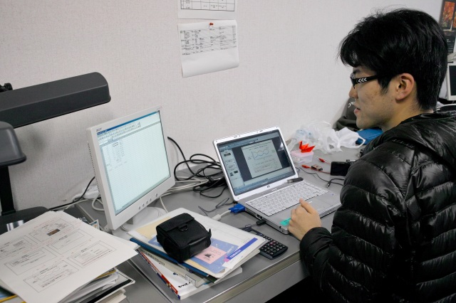
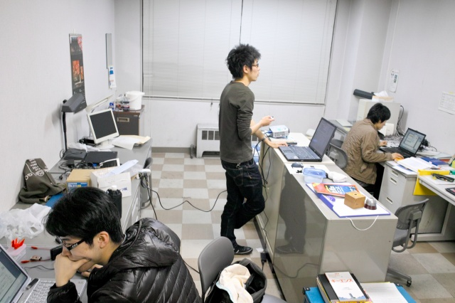
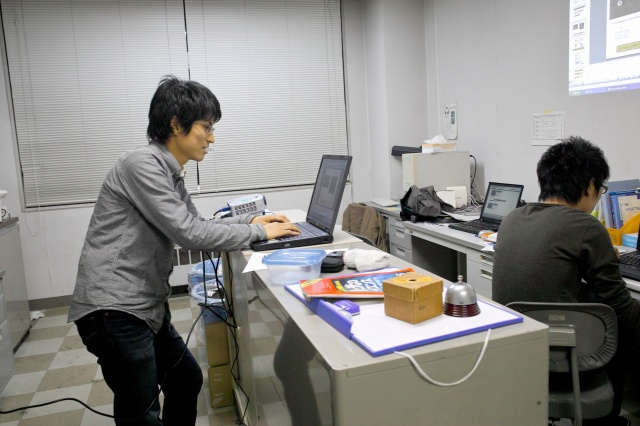
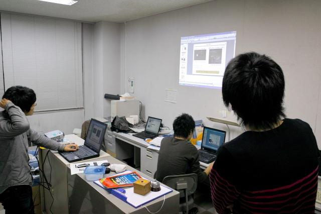
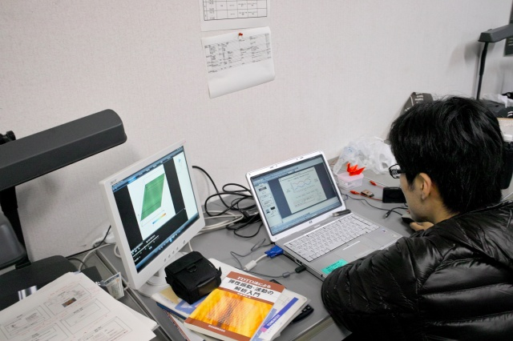

| ・ 中間発表 (前夜編) (H23.11.24) | |||
いつもプレゼン練習するFの部屋は学生実験レポート受取りで使えないため、B4部屋で練習です。なんというか、直前まで修正が効くPowerPointより、大判印刷が必要なポスターの方がちゃんと計画的に準備するから良いのかもしれませんね。ほんとはどちらも一長一短なのでしょうが。 |
|||
|

余裕のK城先輩 |

K城先輩の技巧に愕然とするM下くん | ||
|

対照的な二人 |

K城先輩「校章の下の字、作り直してん。Quality in the Detailsやで」 | ||
|

I上くん練習中 |

とくちゃん計算中 | ||
|

まさに三者三様 |

練習しながら直す！新しい流れですね | ||
|

K城先輩のダメだし |

計算結果 The Movie | ||